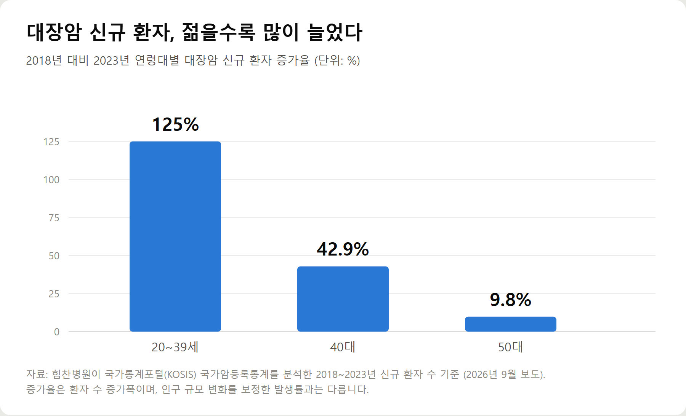
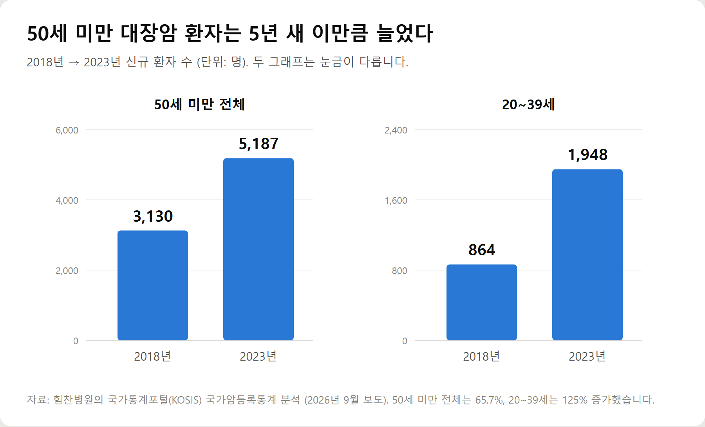
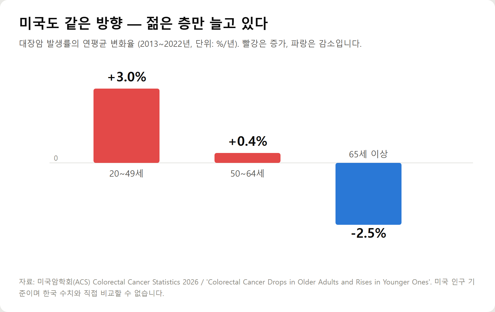
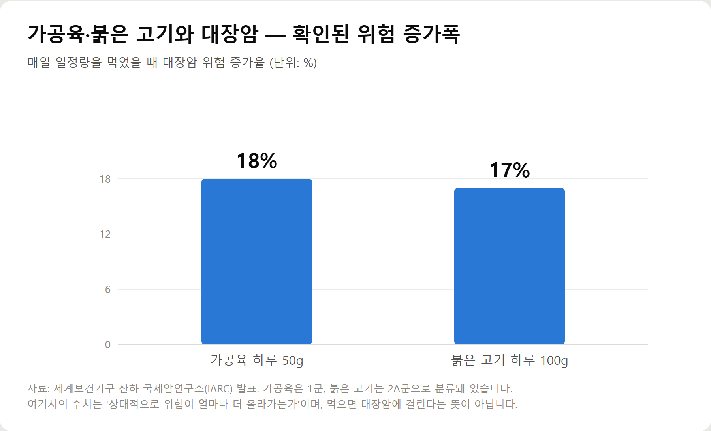

<meta charset="utf-8">
<title>젊은 대장암 왜 늘었나 — 20·30대 초기증상과 검진 기준 — 나의 투자 그리고 행복한 여행</title>
<meta name="description" content="20~39세 대장암 환자가 5년 새 864명에서 1,948명으로 늘었습니다. 젊은 대장암의 위험요인과 초기증상 10가지, 치질 혈변과의 차이, 2026년 검진 기준과 2028년 45세 대장내시경 개편까지 공식 자료로 정리했습니다.">
<meta name="viewport" content="width=device-width, initial-scale=1">
<link rel="canonical" href="https://worldtraveler1.tistory.com/87">
<link rel="preconnect" href="https://fonts.googleapis.com">
<link rel="preconnect" href="https://fonts.gstatic.com" crossorigin>
<link rel="stylesheet" href="https://fonts.googleapis.com/css2?family=Hahmlet:wght@400;600;800&family=IBM+Plex+Mono:wght@400;500&family=IBM+Plex+Sans+KR:wght@300;400;500;600&display=swap">

<style>
  :root{
    --paper:#F2EEE6;--surface:#FAF8F3;--surface-2:#E7E1D5;
    --ink:#191510;--ink-2:#4A4235;--ink-3:#7D7364;
    --line:#D6CEBF;--line-soft:#E4DDD0;--accent:#B06A15;--accent-bright:#C2761A;
    --up:#E5484D;--down:#3B82F6;
    --f-display:"Hahmlet",'Nanum Myeongjo',"Apple SD Gothic Neo",serif;
    --f-body:"IBM Plex Sans KR","Apple SD Gothic Neo","Malgun Gothic",sans-serif;
    --f-mono:"IBM Plex Mono","SFMono-Regular",Consolas,monospace;
    --pad:clamp(20px,5vw,64px);
  }
  @media (prefers-color-scheme:dark){
    :root:not([data-theme="light"]){
      --paper:#0B1120;--surface:#121A2C;--surface-2:#1A2439;
      --ink:#E9EEF7;--ink-2:#A9B5C9;--ink-3:#72809A;
      --line:#26314A;--line-soft:#1D2739;--accent:#E8A33D;--accent-bright:#F0B45C;
    }
  }
  *{box-sizing:border-box;}
  body{margin:0;background:var(--paper);color:var(--ink);font-family:var(--f-body);
    font-weight:300;font-size:1rem;line-height:1.75;-webkit-font-smoothing:antialiased;}
  a{color:inherit;}
  img{max-width:100%;height:auto;}
  .wrap{max-width:760px;margin:0 auto;padding-inline:var(--pad);}
  .nav{position:sticky;top:0;z-index:20;background:color-mix(in srgb,var(--paper) 88%,transparent);
    backdrop-filter:saturate(180%) blur(12px);border-bottom:1px solid var(--line);}
  .nav-in{display:flex;align-items:center;justify-content:space-between;height:58px;}
  .brand{font-family:var(--f-display);font-weight:600;font-size:1rem;letter-spacing:-.02em;text-decoration:none;}
  .back{font-family:var(--f-mono);font-size:.72rem;color:var(--ink-3);text-decoration:none;}
  .article{padding-block:clamp(40px,7vw,72px) clamp(56px,9vw,96px);}
  .eyebrow{font-family:var(--f-mono);font-size:.68rem;letter-spacing:.16em;text-transform:uppercase;
    color:var(--accent);margin:0 0 14px;}
  h1{font-family:var(--f-display);font-weight:800;font-size:clamp(1.6rem,4.4vw,2.3rem);
    line-height:1.3;letter-spacing:-.03em;margin:0 0 16px;}
  .byline{font-family:var(--f-mono);font-size:.72rem;color:var(--ink-3);
    padding-bottom:24px;border-bottom:1px solid var(--line);margin-bottom:32px;}
  h2{font-family:var(--f-display);font-weight:600;font-size:1.25rem;letter-spacing:-.02em;margin:42px 0 14px;}
  h3{font-family:var(--f-display);font-weight:600;font-size:1.05rem;letter-spacing:-.02em;
    margin:30px 0 10px;padding-top:14px;border-top:1px solid var(--line-soft);}
  h3 .code{font-family:var(--f-mono);font-size:.7rem;font-weight:400;color:var(--ink-3);margin-left:6px;}
  p{margin:0 0 18px;color:var(--ink-2);}
  ul.checks{margin:0 0 18px;padding-left:20px;color:var(--ink-2);}
  ul.checks li{margin-bottom:8px;font-size:.94rem;}
  table{width:100%;border-collapse:collapse;font-size:.88rem;margin-bottom:8px;}
  th{font-family:var(--f-mono);font-size:.66rem;letter-spacing:.06em;text-transform:uppercase;
    color:var(--ink-3);text-align:right;padding:8px 6px;border-bottom:1px solid var(--line);}
  th:first-child{text-align:left;}
  td{padding:10px 6px;border-bottom:1px solid var(--line-soft);color:var(--ink-2);}
  td.num{font-family:var(--f-mono);text-align:right;font-variant-numeric:tabular-nums;}
  td.up{color:var(--up);} td.down{color:var(--down);}
  .scroll{overflow-x:auto;}
  figure{margin:22px 0;}
  figure img{display:block;border-radius:3px;background:var(--surface-2);}
  figcaption{margin-top:8px;font-family:var(--f-mono);font-size:.68rem;color:var(--ink-3);text-align:center;}
  .note{margin-top:34px;padding:16px 18px;border-left:3px solid var(--accent);
    background:var(--surface);border-radius:0 3px 3px 0;}
  .note p{margin:0;font-size:.85rem;color:var(--ink-3);}
  .foot{border-top:1px solid var(--line);background:var(--surface);padding-block:30px 38px;}
  .foot p{margin:0;font-size:.8rem;color:var(--ink-3);}
</style>

<nav class="nav">
  <div class="wrap nav-in">
    <a class="brand" href="../index.html">나의 투자 그리고 행복한 여행</a>
    <a class="back" href="../index.html#stocks">← 시황으로</a>
  </div>
</nav>

<main class="wrap article">
  <p class="eyebrow">Market</p>
  <h1>젊은 대장암 데이터 정리 — 20~39세 5년 새 125% 증가, 검진은 2028년 개편</h1>
  <p class="byline">건강 · 2026-09-18 기준</p>

  <p>한 줄 요약: 20~39세 대장암 신규 환자가 2018년 864명에서 2023년 1,948명으로 늘었고, 국가 대장암 검진은 2028년부터 45세 대장내시경으로 바뀔 예정입니다.</p>
  <p>환자 수의 절대 규모는 중장년층이 여전히 크지만, 증가 속도는 젊은 연령대가 가장 빠릅니다. 미국도 같은 방향입니다.</p>
  <p>이 글은 2026년 9월 기준으로 확인 가능한 공식 통계와 권고안만 모아 정리한 기록입니다.</p>
  <h2>1. 젊은 대장암, 숫자로 보면 어디까지 사실인가</h2>
  <p>먼저 사실관계부터 정리하겠습니다.</p>
  <p>힘찬병원이 국가통계포털(KOSIS)의 국가암등록통계를 분석한 결과, 20~39세 대장암 신규 환자는 2018년 864명에서 2023년 1,948명으로 125% 넘게 늘었습니다.</p>
  <p>같은 기간 40대는 42.9%, 50대는 9.8% 증가했습니다. 젊을수록 증가폭이 컸습니다.</p>
  <figure><figcaption>2018년 대비 2023년 연령대별 대장암 신규 환자 증가율 (단위: %)</figcaption></figure>
  <p>50세 미만 전체로 넓혀 보면 3,130명에서 5,187명으로 65.7% 늘었습니다.</p>
  <figure><figcaption>50세 미만 대장암 신규 환자 수 변화 2018년 → 2023년 (단위: 명)</figcaption></figure>
  <p>여기서 한 가지는 분명히 하고 가겠습니다.</p>
  <div class="note"><p>증가율이 높다는 것과 위험이 크다는 것은 다른 이야기입니다. 원래 숫자가 작으면 조금만 늘어도 증가율은 크게 나옵니다. 20~39세 환자 1,948명은 2023년 전체 신규 암환자 28만8,613명에 비하면 여전히 작은 비중입니다.</p></div>
  <p>그래도 이 흐름을 무시하기 어려운 이유는, 같은 방향이 여러 나라에서 동시에 관찰되고 있기 때문입니다.</p>
  <p>미국암학회가 발표한 2026년 대장암 통계를 보면 20~49세의 발생률은 2013년부터 2022년까지 매년 3%씩 올랐습니다. 반면 65세 이상은 매년 2.5%씩 줄었습니다.</p>
  <figure><figcaption>미국 대장암 발생률의 연평균 변화율 2013~2022년 (단위: %/년)</figcaption></figure>
  <p>고령층에서 줄어든 것은 검진이 자리를 잡은 결과로 해석됩니다. 정작 검진 대상이 아니었던 젊은 층에서 반대 흐름이 나타나고 있는 셈입니다.</p>
  <h2>2. 젊은 사람에게 대장암이 생기는 이유는 무엇인가</h2>
  <p>결론부터 말하면, 아직 하나의 원인으로 설명되지 않습니다.</p>
  <p>현재까지는 여러 위험요인이 겹쳐 작용하는 것으로 보고 있습니다. 여기서 '위험요인'과 '원인'은 구분해서 이해하셔야 합니다.</p>
  <div class="note"><p>위험요인은 그 병이 생길 가능성을 높이는 조건입니다. 위험요인이 있다고 반드시 병에 걸리는 것도 아니고, 없다고 안 걸리는 것도 아닙니다.</p></div>
  <p>거론되는 요인은 크게 다음과 같습니다.</p>
  <ul class="checks">
    <li>가족력·유전 — 부모나 형제자매 중 대장암이나 대장 용종이 있었던 경우</li>
    <li>비만, 특히 복부비만과 인슐린 저항성</li>
    <li>운동 부족과 오래 앉아 있는 생활</li>
    <li>식이섬유가 적고 지방·정제 탄수화물·당류가 많은 식사</li>
    <li>가공육과 붉은 고기를 자주, 많이 먹는 습관</li>
    <li>음주</li>
    <li>흡연</li>
    <li>궤양성 대장염·크론병 같은 만성 염증성 장질환</li>
  </ul>
  <p>이 가운데 식습관 쪽은 근거 수준이 비교적 구체적으로 정리돼 있습니다.</p>
  <p>세계보건기구 산하 국제암연구소(IARC)는 햄·소시지·베이컨 같은 가공육을 1군 발암물질로, 소·돼지 같은 붉은 고기를 2A군으로 분류했습니다.</p>
  <figure><figcaption>매일 섭취 시 대장암 위험 증가율 — 가공육 50g과 붉은 고기 100g 기준 (단위: %)</figcaption></figure>
  <p>매일 가공육 50g을 먹으면 대장암 위험이 18%, 붉은 고기를 100g 먹으면 17% 높아지는 것으로 보고됐습니다.</p>
  <p>다만 1군이라는 분류는 '위험이 얼마나 큰가'가 아니라 '근거가 얼마나 확실한가'를 나타냅니다. 담배와 같은 등급이라고 해서 위험의 크기까지 같다는 뜻이 아닙니다.</p>
  <p>젊은 층에서 늘어난 배경으로는 배달 음식 중심의 식사와 채소 섭취 감소, 그리고 비만 증가가 함께 지목됩니다. 2023년 기준 비만 유병률은 20대 32%, 30대 42%로 집계됐습니다.</p>
  <p>한 가지 습관이 대장암을 직접 일으킨다고 말할 수는 없습니다. 이 요인들이 오랜 기간 함께 쌓였을 때 가능성이 올라간다고 보는 편이 정확합니다.</p>
  <h2>3. 20·30·40대가 놓치기 쉬운 대장암 초기증상</h2>
  <p>가장 중요한 전제를 먼저 말씀드립니다.</p>
  <div class="note"><p>대장암은 초기에 아무 증상이 없는 경우가 대부분입니다. 증상이 나타났다면 어느 정도 진행된 상태일 수 있습니다. 그래서 증상만으로 판단하는 것은 한계가 있습니다.</p></div>
  <p>그럼에도 아래 신호들은 확인해볼 필요가 있습니다.</p>
  <ul class="checks">
    <li>혈변 — 선홍색이거나 검붉은 피가 변에 섞여 나오는 경우</li>
    <li>검은 변 — 타르처럼 검고 끈적한 변은 위쪽 소화관 출혈일 수도 있습니다</li>
    <li>점액변 — 코처럼 끈적한 점액이 섞여 나오는 경우</li>
    <li>배변 습관의 변화 — 원래와 달리 횟수나 형태가 바뀐 상태가 이어지는 경우</li>
    <li>지속되는 설사 또는 변비, 설사와 변비가 번갈아 나타나는 경우</li>
    <li>변이 가늘어지는 변화 — 연필처럼 가늘어진 상태가 계속되는 경우</li>
    <li>잔변감 — 배변 후에도 덜 본 듯 무지근한 느낌</li>
    <li>복통과 복부 팽만, 가스가 차는 느낌</li>
    <li>다이어트를 하지 않았는데 생기는 체중 감소</li>
    <li>이유 없는 피로감과 어지럼, 건강검진에서 발견되는 빈혈</li>
  </ul>
  <p>여기서 각 증상마다 반드시 붙여야 할 문장이 있습니다.</p>
  <p>이 증상이 있다고 해서 대장암이라는 뜻은 아닙니다. 치질, 과민성 장증후군, 장염, 염증성 장질환, 궤양 등 훨씬 흔한 원인들이 같은 증상을 만듭니다.</p>
  <p>판단의 기준은 증상의 종류보다 '얼마나 오래, 얼마나 달라졌는가'입니다.</p>
  <ul class="checks">
    <li>며칠 만에 좋아지는 변화 — 대개 일시적인 원인입니다</li>
    <li>2~4주 이상 이어지는 배변 습관 변화 — 진료로 원인을 확인하는 편이 좋습니다</li>
    <li>혈변이 반복되거나, 체중 감소·빈혈이 함께 오는 경우 — 미루지 않는 편이 좋습니다</li>
  </ul>
  <h2>4. 종양 위치에 따라 증상이 다르게 나타납니다</h2>
  <p>같은 대장암이라도 생긴 위치에 따라 먼저 나타나는 증상이 달라집니다. 이 부분이 젊은 환자에게 특히 헷갈리는 지점입니다.</p>
  <p>오른쪽 대장(맹장·상행결장)은 장이 굵고 변이 묽은 구간입니다. 막히는 일이 적어 배변 증상이 잘 안 나타납니다. 대신 만성적인 출혈이 이어지면서 빈혈로 먼저 발견되는 경우가 있습니다.</p>
  <p>왼쪽 대장(하행결장·에스결장)과 직장은 통로가 좁고 변이 단단해진 구간입니다. 그래서 변이 가늘어지거나 배변 습관이 바뀌고, 눈에 보이는 혈변이 나타나기 쉽습니다.</p>
  <p>최근 젊은 층에서 늘고 있는 대장암이 주로 에스결장과 직장에서 발생한다는 점도 함께 보고되고 있습니다. 젊은 환자가 혈변으로 처음 이상을 느끼는 경우가 많은 이유이기도 합니다.</p>
  <p>건강검진에서 특별한 이유 없이 빈혈이 나왔다면, 그것도 한 번은 확인해볼 만한 신호입니다.</p>
  <h2>5. 치질 혈변과 대장암 혈변, 스스로 구별할 수 있을까</h2>
  <p>이 글에서 가장 강조하고 싶은 부분입니다.</p>
  <p>젊은 층에서 대장암 진단이 늦어지는 가장 흔한 경로가 '혈변을 치질로 넘긴 경우'입니다. 실제로 20~30대에서 혈변의 원인은 치질일 확률이 훨씬 높습니다. 그래서 더 넘기기 쉽습니다.</p>
  <p>흔히 이렇게들 말합니다. 선홍색이면 치질, 검붉으면 대장암이라고.</p>
  <div class="note"><p>그런데 이 구분은 스스로 판단하는 기준으로 쓰기 어렵습니다. 직장이나 에스결장에 생긴 종양은 항문과 가까워서 출혈이 선홍색으로 보일 수 있습니다. 치질과 대장암이 동시에 있는 경우도 있습니다.</p></div>
  <p>색만으로 나눌 수 없는 이유가 하나 더 있습니다. 치질이 있는 사람은 피가 보여도 '늘 있던 그것'이라고 해석하게 됩니다. 이미 설명이 준비돼 있으니 다른 가능성을 떠올리지 않게 됩니다.</p>
  <p>그래서 색보다 아래 항목을 보는 편이 낫습니다.</p>
  <ul class="checks">
    <li>출혈이 몇 주 이상 반복되는가</li>
    <li>피가 변 표면에만 묻는 것이 아니라 변에 섞여 나오는가</li>
    <li>혈변과 함께 배변 습관이 바뀌었는가</li>
    <li>체중 감소, 피로감, 빈혈이 같이 있는가</li>
    <li>치질 치료를 받았는데도 출혈이 계속되는가</li>
  </ul>
  <p>이 중 해당되는 것이 있다면 원인을 눈으로 확인하는 편이 확실합니다. 소화기내과 전문의들도 출혈이 반복되면 대장내시경으로 출혈 부위를 직접 확인해 원인을 밝혀야 한다고 설명합니다.</p>
  <p>치질로 확인되면 그것대로 안심하고 치료하면 됩니다. 확인 자체가 목적입니다.</p>
  <h2>6. 젊은 사람도 대장내시경을 받아야 하나 — 2026년 기준 검진 정리</h2>
  <p>나이만으로 답이 정해지지 않습니다. 네 가지 경우를 나눠서 보겠습니다.</p>
  <p>① 평균위험군 — 증상도 가족력도 없는 경우</p>
  <p>2026년 9월 현재 국가암검진의 대장암 검진은 만 50세 이상을 대상으로 합니다. 매년 분변잠혈검사(변에 눈에 보이지 않는 피가 섞여 있는지 확인하는 검사)를 받고, 여기서 양성이 나오면 대장내시경으로 이어집니다.</p>
  <p>한편 국립암센터의 대장암 검진 권고안은 45세부터를 검진 시작 연령으로 보고 있습니다. 2015년 권고안은 45~80세 무증상 성인에게 1~2년 간격의 분변잠혈검사를 권고했고, 2025년 개정 논의에서는 45~74세에게 10년 간격 대장내시경 또는 1~2년 간격 분변잠혈검사를 조건부로 권고하는 안이 공개됐습니다.</p>
  <p>즉 국가가 비용을 대는 검진 연령과 학술적 권고 연령이 지금은 다릅니다.</p>
  <p>② 2028년부터는 이 기준이 바뀝니다</p>
  <p>보건복지부는 2026년 2월 24일 국가암관리위원회에서 제5차 암관리종합계획(2026~2030)을 의결했습니다.</p>
  <div class="note"><p>핵심은 2028년을 목표로 45~74세를 대상으로 10년 주기의 대장내시경을 1차 검사로 도입한다는 것입니다. 분변잠혈검사를 먼저 받지 않고 바로 내시경을 받는 방식으로 바뀝니다.</p></div>
  <p>지금 40대 초반이라면 몇 년 뒤 국가검진 대상이 된다는 뜻입니다.</p>
  <p>③ 가족력이 있는 경우</p>
  <p>부모·형제자매 중 대장암이나 대장 용종 진단을 받은 사람이 있다면 시작 시점이 달라집니다. 일반적으로 가족이 진단받은 나이를 기준으로 그보다 이른 시점에 검사를 시작하도록 권고하며, 몇 살부터 어떤 간격으로 할지는 가족의 진단 나이와 인원수에 따라 달라지므로 진료를 통해 정하게 됩니다.</p>
  <p>④ 유전성 대장암 위험이 높은 경우</p>
  <p>린치증후군이나 가족성 선종성 용종증처럼 유전적 요인이 확인된 경우에는 훨씬 이른 나이부터, 훨씬 짧은 간격으로 검사합니다. 이 경우는 일반적인 검진 기준이 아니라 전문 진료의 영역입니다.</p>
  <p>⑤ 증상이 있는 경우</p>
  <p>이건 나이와 상관없습니다.</p>
  <p>혈변이 반복되거나 배변 습관 변화가 몇 주 이상 이어지고 있다면, 그것은 검진이 아니라 진단의 영역입니다. 20대여도 필요하면 대장내시경을 받습니다.</p>
  <p>참고로 미국암학회는 2026년 5월 27일 개정한 권고안에서도 평균위험군의 검진 시작 연령을 45세로 유지했습니다. 위험이 높은 사람은 그보다 일찍 시작할 수 있다고 덧붙였습니다.</p>
  <h2>7. 대장암 위험을 낮추기 위해 지금 할 수 있는 것</h2>
  <p>위험요인 중에는 바꿀 수 없는 것과 바꿀 수 있는 것이 섞여 있습니다. 나이와 가족력은 바꿀 수 없습니다. 나머지는 조정할 수 있습니다.</p>
  <ul class="checks">
    <li>적정 체중 유지 — 특히 복부비만을 줄이는 쪽이 의미가 있습니다</li>
    <li>규칙적인 신체활동 — 주 5회 30분 이상의 중등도 운동이 기준으로 제시됩니다</li>
    <li>식이섬유 늘리기 — 채소, 과일, 통곡물, 콩류</li>
    <li>가공육 줄이기 — 햄·소시지·베이컨을 매일 먹는 습관부터 조정합니다</li>
    <li>붉은 고기는 양과 빈도를 조절하고, 굽거나 태우는 조리를 줄입니다</li>
    <li>금연</li>
    <li>음주 줄이기 — 대장암 위험요인으로 반복 확인되는 항목입니다</li>
    <li>해당 나이가 되면 검진을 받고, 증상이 있으면 나이와 무관하게 진료를 받습니다</li>
  </ul>
  <p>특정 음식 하나로 대장암을 예방할 수 있다는 말은 사실이 아닙니다. 식단 전체의 구성이 오래 유지될 때 의미가 생깁니다.</p>
  <p>건강기능식품이나 유산균으로 대장암을 예방한다는 표현도 확인된 근거가 아닙니다.</p>
  <h2>8. 이런 경우에는 미루지 마세요 — 체크리스트</h2>
  <p>아래 항목 중 해당되는 것이 있다면 진료를 권합니다. 대장암 여부를 가리기 위해서라기보다, 원인을 확인하기 위해서입니다.</p>
  <ul class="checks">
    <li>혈변이 2주 이상 반복된다</li>
    <li>배변 습관 변화가 4주 이상 이어진다</li>
    <li>변이 가늘어진 상태가 계속된다</li>
    <li>다이어트를 하지 않았는데 최근 몇 달 사이 체중이 눈에 띄게 줄었다</li>
    <li>이유를 알 수 없는 빈혈이나 지속되는 피로감이 있다</li>
    <li>직계 가족 중 대장암이나 대장 용종 진단을 받은 사람이 있다</li>
    <li>궤양성 대장염이나 크론병 진단을 받은 적이 있다</li>
    <li>치질 치료를 받았는데도 출혈이 멎지 않는다</li>
  </ul>
  <p>반대로, 하루 이틀 있다 사라진 변비나 설사, 매운 음식 뒤의 복통처럼 원인이 분명하고 짧게 끝나는 변화까지 불안해할 필요는 없습니다.</p>
  <h2>자주 묻는 질문</h2>
  <p>Q. 30대도 대장암에 걸릴 수 있나요?</p>
  <p>가능합니다. 국가암등록통계 기준으로 20~39세 대장암 신규 환자는 2018년 864명에서 2023년 1,948명으로 늘었습니다. 다만 전체 환자 중 젊은 층이 차지하는 비중은 여전히 작습니다. 걸릴 수 있다는 것과 흔하다는 것은 다른 이야기입니다.</p>
  <p>Q. 대장암 초기에는 어떤 증상이 나타나나요?</p>
  <p>초기에는 증상이 없는 경우가 대부분입니다. 그래서 증상이 나타나기 전에 발견하려고 검진을 하는 것입니다. 증상이 생긴다면 혈변, 배변 습관 변화, 변이 가늘어지는 변화, 복통, 체중 감소 등이 알려져 있습니다.</p>
  <p>Q. 혈변이 나오면 무조건 대장암인가요?</p>
  <p>아닙니다. 젊은 연령에서 혈변의 가장 흔한 원인은 치질입니다. 장염, 염증성 장질환, 게실 출혈 등도 원인이 됩니다. 다만 흔한 원인이라고 해서 확인 없이 단정할 수는 없습니다.</p>
  <p>Q. 치질과 대장암 혈변은 어떻게 다른가요?</p>
  <p>색이나 양상만으로 구별하기 어렵습니다. 직장 쪽 종양의 출혈도 선홍색으로 보일 수 있고, 치질과 대장암이 함께 있는 경우도 있습니다. 출혈이 반복되거나 다른 증상이 같이 있으면 대장내시경으로 출혈 부위를 확인하는 것이 확실합니다.</p>
  <p>Q. 변이 가늘어지면 대장암인가요?</p>
  <p>그렇게 단정할 수 없습니다. 변의 굵기는 식사 내용과 수분 섭취, 장의 상태에 따라서도 달라집니다. 다만 이전과 달리 가늘어진 상태가 몇 주 이상 계속된다면 원인을 확인해보시는 편이 좋습니다.</p>
  <p>Q. 젊은 사람도 대장내시경을 받아야 하나요?</p>
  <p>증상이 없고 가족력도 없다면 지금의 국가검진 기준으로는 50세부터가 대상입니다. 반면 증상이 있거나 가족력이 있다면 나이와 관계없이 검사 대상이 될 수 있습니다. 판단은 진료를 통해 하게 됩니다.</p>
  <p>Q. 대장암 가족력이 있으면 어떻게 해야 하나요?</p>
  <p>가족이 진단받은 나이보다 이른 시점에 검사를 시작하도록 권고합니다. 구체적인 시작 연령과 간격은 몇 명이, 몇 살에 진단받았는지에 따라 달라지므로 소화기내과 진료에서 정하는 것이 정확합니다.</p>
  <p>Q. 대장암 검진 나이가 45세로 바뀐다는 말은 사실인가요?</p>
  <p>계획으로는 사실입니다. 보건복지부가 2026년 2월 의결한 제5차 암관리종합계획에 45~74세를 대상으로 10년 주기 대장내시경을 1차 검사로 도입하는 내용이 담겼고, 목표 시점은 2028년입니다. 2026년 9월 현재 시행되고 있는 기준은 아닙니다.</p>
  <p>Q. 대장암 예방에 좋은 음식은 무엇인가요?</p>
  <p>한 가지 음식으로 예방되지는 않습니다. 채소·과일·통곡물처럼 식이섬유가 많은 식단을 유지하고 가공육과 붉은 고기 섭취를 줄이는 방향이 반복해서 권고됩니다. 특정 식품이나 건강기능식품이 대장암을 예방한다는 표현은 근거가 확인된 내용이 아닙니다.</p>
  <h2>정리하면</h2>
  <p>20~39세 대장암 신규 환자는 5년 사이 864명에서 1,948명으로 늘었고, 50세 미만 전체로는 3,130명에서 5,187명이 됐습니다. 미국도 20~49세에서만 발생률이 매년 3%씩 오르고 있습니다.</p>
  <p>그렇다고 대장암이 젊은 사람의 병이 된 것은 아닙니다. 늘어나는 속도가 빠른 것이고, 그 결과 '이 나이엔 아니겠지'라는 전제가 예전만큼 안전하지 않게 된 것입니다.</p>
  <p>실제로 기억하실 것은 세 가지입니다.</p>
  <ul class="checks">
    <li>초기에는 증상이 없습니다. 증상으로 거르려는 접근에는 한계가 있습니다</li>
    <li>혈변을 치질로 스스로 결론 내리지 않습니다. 반복되면 원인을 확인합니다</li>
    <li>가족력이 있거나 증상이 있으면, 검진 연령과 상관없이 진료 대상입니다</li>
  </ul>
  <p>검진 기준은 2028년을 목표로 45세 대장내시경으로 바뀔 예정입니다. 지금 40대 초반이라면 미리 알아두실 만합니다.</p>
  <p>다음 글에서는 대장내시경 전 식사 조절 방법과 검사 비용, 그리고 혈변이 나오는 다른 원인들을 따로 정리하겠습니다.</p>
  <div class="note"><p>이 글은 공개된 공식 통계와 검진 권고안을 정리한 건강정보이며, 개인의 진단이나 치료를 대신하지 않습니다. 증상이 있거나 걱정되는 부분이 있다면 의료기관에서 진료를 받으시기 바랍니다.</p></div>
  <p>※ 본문 수치의 기준 시점은 2026년 9월입니다. 출처는 국가암등록통계(국가통계포털 KOSIS) 분석 보도, 보건복지부 제5차 암관리종합계획(2026년 2월 24일 의결), 국립암센터 대장암 검진 권고안, 중앙암등록본부 2023년 국가암등록통계, 미국암학회(ACS) 대장암 통계 및 검진 권고안 2026년 개정판, 세계보건기구 산하 국제암연구소(IARC) 발표, 국가암정보센터 대장암 정보입니다. 검진 기준과 통계는 이후 변경될 수 있습니다.</p>
</main>

<footer class="foot">
  <div class="wrap"><p>나의 투자 그리고 행복한 여행 · 투자 판단의 참고 자료일 뿐, 매수·매도를 권유하지 않습니다.</p></div>
</footer>
